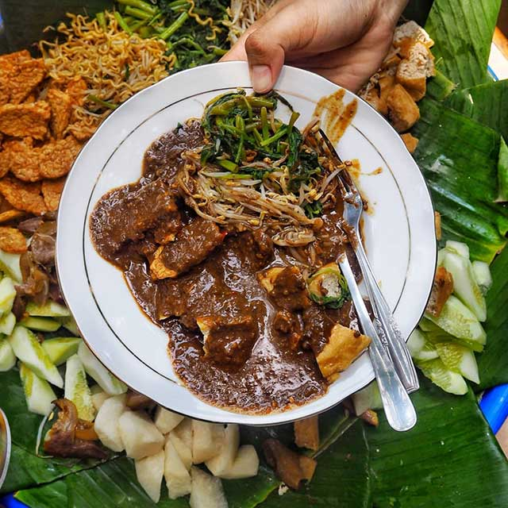
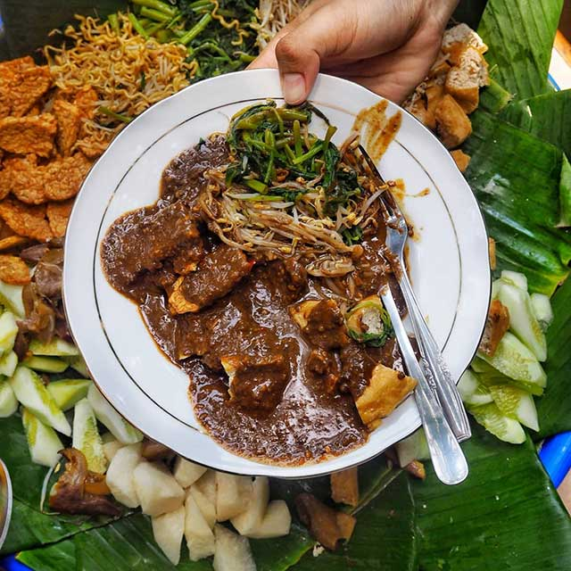

Selamat Datang di Rujak Cingur Bu Yayuk, tempat di mana kami menghadirkan rujak cingur terbaik seindonesia dengan komitmen dan dedikasi untuk memberikan pengalaman kuliner yang tak terlupakan. Kami merasa bangga untuk berbagi dengan Anda rahasia kelezatan rujak cingur kami yang telah terkenal hingga ke penjuru negeri. Kami percaya bahwa rujak cingur yang sempurna dimulai dari bahan-bahan terbaik. Oleh karena itu, kami selalu berusaha untuk memilih bahan-bahan berkualitas tinggi dari pasar terbaik. Dengan teliti, kami memilih buah-buahan segar, sayuran, dan bumbu-bumbu khas yang akan digunakan dalam sajian rujak kami. Kami tidak pernah berkompromi dengan kualitas karena kami tahu bahwa hanya dengan bahan-bahan terbaik, kami dapat menciptakan rasa yang luar biasa. Salah satu hal yang membedakan rujak cingur Bu Yayuk adalah penggunaan cingur sapi Australia yang berkualitas tinggi. Cingur sapi yang kami gunakan dipilih secara khusus karena kelezatannya yang unik dan teksturnya yang lembut. Ini adalah salah satu bahan utama yang membuat rujak cingur kami begitu istimewa. Kami memiliki standar yang tinggi dalam pemilihan daging cingur ini sehingga Anda dapat menikmati potongan cingur sapi yang lezat dalam setiap suapan. Selain dari bahan-bahan yang berkualitas, kami juga mengutamakan kebersihan dan keamanan dalam proses persiapan dan penyajian makanan. Kami berkomitmen untuk menjaga standar tertinggi dalam hal-hal seperti kebersihan dapur dan peralatan, untuk memastikan bahwa makanan yang kami sajikan tidak hanya lezat tetapi juga aman untuk dikonsumsi. Selama bertahun-tahun, kami telah menerima dukungan dan apresiasi yang luar biasa dari pelanggan setia kami. Kami ingin mengucapkan terima kasih kepada Anda yang telah menjadi bagian dari perjalanan kuliner kami. Dengan setiap piring rujak cingur yang kami sajikan, kami berharap dapat terus memanjakan lidah Anda dan memberikan pengalaman makan yang tak terlupakan. Terima kasih telah memilih Rujak Cingur Bu Yayuk. Kami menantikan kedatangan Anda untuk menikmati sajian rujak cingur terbaik yang kami tawarkan.
 

Monday - Friday: 10:00 AM - 9:00 PM
Saturday - Sunday: 11:00 AM - 8:00 PM
Phone: +62 896-0162-2941
Email: info@rujakcingurbuyayuk.com
Address: 50116 Puncak Kertajaya 20013, Surabaya, Indonesia